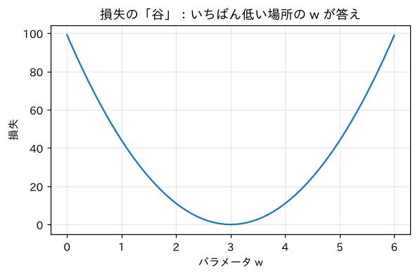

第2部 ゼロから作る · 第7章
学習とは坂を下ること：微分と勾配降下法
目隠しで山を下りる方法と、PyTorchの自動微分
おすすめは「ページを読みながら、コードを自分のノートブックに1セルずつ貼って実行」。完成ノートは困ったときの答え合わせ用です。
つくるもの
データから「ちょうどいい数」を自動で探す、いちばん小さな学習プログラム（勾配降下法）
ついでに身につく理論
- モデル・パラメータ・損失の関係
- 二乗誤差
- 微分＝傾き（数値微分で確かめる）
- 勾配降下法と学習率
- 偏微分と勾配（パラメータが2つ以上）
- 連鎖律と誤差逆伝播法
- PyTorchの自動微分（
backward）
新しく使うPython
requires_grad=Trueloss.backward()と.gradwith torch.no_grad():の本当の意味.grad.zero_()

ミナト
微分……高校でやった気がするけど、記憶が霧の向こうです。

ボンゴ先生
安心してほしい。この章で使う微分は「坂の傾き」、それだけだ。公式を暗記する必要はない。傾きはコンピュータに測らせればいい。キミの仕事は「傾きが分かったら、どっちに進むか」を考えることだけだ。
ボンゴ焼き問題
ボンゴ先生は、週末にたこ焼きならぬ「ボンゴ焼き」の屋台を出しています。焼いた時間と、売れた個数の記録がこちら。
hours = [1, 2, 3, 4, 5] # 焼いた時間
sold = [2.9, 6.2, 8.8, 12.1, 15.0] # 売れた個数（10個単位）だいたい「時間 × 3」くらいでしょうか。これを モデル にしてみます。
は「1時間あたり何個売れるか」を表す数で、これが パラメータ です。 をいくつにすれば、記録にいちばん合うでしょう？
まず「合っている度合い」を測るものさしを作ります。予想と実際の差を2乗して平均したものを 損失 にします。
def predict(w, x):
return w * x
def loss_fn(w):
total = 0.0
for x, y in zip(hours, sold):
total += (predict(w, x) - y) ** 2
return total / len(hours)
for w in [1, 2, 3, 4]:
print(f"w = {w} のとき、損失 = {loss_fn(w):.3f}")w = 1 のとき、損失 = 44.100
w = 2 のとき、損失 = 11.060
w = 3 のとき、損失 = 0.020
w = 4 のとき、損失 = 10.980あたりが良さそうです。グラフにしてみましょう。
!pip install -q matplotlib-fontjaimport matplotlib.pyplot as plt
import matplotlib_fontja
ws = [i / 10 for i in range(0, 61)]
plt.figure(figsize=(6, 3.5))
plt.plot(ws, [loss_fn(w) for w in ws])
plt.xlabel("パラメータ w")
plt.ylabel("損失")
plt.title("損失の「谷」：いちばん低い場所の w が答え")
plt.grid(alpha=0.3)
plt.show()
お椀のような谷の形です。学習とは、この谷の一番底を探すことです。
今回はパラメータが1個なので、グラフを描いて目で探せました。でも、第1章のLLMのパラメータは約5億個。5億次元のグラフは、描くのも見るのも無理です。そこで、グラフ全体を見ずに、今いる場所の傾きだけを頼りに下っていく方法を使います。
目隠しで山を下りる
ボンゴ先生
キミは濃い霧の山の中にいる。目隠しをされていて、遠くは見えない。分かるのは足元の傾きだけ。どうやって谷底まで下りる？
ミナト
足元が下っている方向に、一歩ずつ進めばいいんじゃないですか？
ボンゴ先生
正解！ それが 勾配降下法（こうばいこうかほう）だ。人類の機械学習の大部分は、この「足元の傾きを見て一歩下る」でできている。拍子抜けするほど単純だろう？
足元の傾きを測ってみましょう。 をほんの少し（）だけ動かして、損失がどれだけ変わるかを見ます。
def slope(w, h=0.0001):
return (loss_fn(w + h) - loss_fn(w)) / h
for w in [1, 2, 3, 4]:
print(f"w = {w} での傾き：{slope(w):8.3f}")w = 1 での傾き： -44.039
w = 2 での傾き： -22.039
w = 3 での傾き： -0.039
w = 4 での傾き： 21.961勾配降下法
一歩の大きさを 学習率（learning rate）と呼び、lr と書きます。ルールはこれだけ。
「傾きと逆向きに、傾きの大きさに比例して進む」。坂が急なら大きく、緩やかなら小さく進みます。
w = 0.0
lr = 0.01
for step in range(15):
w = w - lr * slope(w)
if step % 2 == 0:
print(f"ステップ {step:2d}：w = {w:.4f} 損失 = {loss_fn(w):.4f}")ステップ 0：w = 0.6604 損失 = 60.3252
ステップ 2：w = 1.5773 損失 = 22.3426
ステップ 4：w = 2.1351 損失 = 8.2831
ステップ 6：w = 2.4745 損失 = 3.0788
ステップ 8：w = 2.6810 損失 = 1.1523
ステップ 10：w = 2.8066 損失 = 0.4392
ステップ 12：w = 2.8830 損失 = 0.1752
ステップ 14：w = 2.9295 損失 = 0.0775から出発して、15歩で3の近くまで来ました。誰も「答えは3だよ」と教えていないのに、傾きだけを頼りに谷底へ向かっています。最初は坂が急なので大きく進み、谷底に近づくと坂が緩やかになって、歩幅が自然に小さくなっているのにも注目してください。
パラメータが2つになったら：勾配
実際には、時間がゼロでも少しは売れる（常連さんがいる）かもしれません。モデルを少し賢くします。
パラメータが と の2つになりました。今度は2次元の地形（山と谷）を下ることになります。傾きも「 方向の傾き」と「 方向の傾き」の2つを測ります。
def loss2(w, b):
return sum((w * x + b - y) ** 2 for x, y in zip(hours, sold)) / len(hours)
def slopes(w, b, h=0.0001):
dw = (loss2(w + h, b) - loss2(w, b)) / h # w だけ少し動かす
db = (loss2(w, b + h) - loss2(w, b)) / h # b だけ少し動かす
return dw, db
w, b = 0.0, 0.0
for step in range(2000):
dw, db = slopes(w, b)
w, b = w - 0.02 * dw, b - 0.02 * db
print(f"w = {w:.3f}, b = {b:.3f}, 損失 = {loss2(w, b):.4f}")w = 3.010, b = -0.029, 損失 = 0.0198PyTorchの自動微分
PyTorchは、計算の過程を記録しておいて、正確な勾配を一発で計算してくれます。これを 自動微分（autograd）と言います。
import torch
x = torch.tensor(hours, dtype=torch.float32)
y = torch.tensor(sold)
w = torch.tensor(1.0, requires_grad=True) # 「この数の勾配を知りたい」と宣言
loss = ((w * x - y) ** 2).mean()
loss.backward() # 勾配を計算！
print("損失：", loss.item())
print("自動微分の傾き：", w.grad.item())
print("数値微分の傾き：", slope(1.0))損失： 44.099998474121094
自動微分の傾き： -44.040000915527344
数値微分の傾き： -44.03890000006072loss.backward() を呼ぶだけで、w.grad に傾き が入りました。数値微分とほぼ同じ値ですが、小数点以下3桁目からずれています。数値微分は「少し右に動かした」ときの傾きなので誤差があり、自動微分のほうが正確な値です。
では、自動微分で学習ループを書き直しましょう。これが、この先何度も書くことになる 学習ループの基本形 です。
w = torch.tensor(0.0, requires_grad=True)
b = torch.tensor(0.0, requires_grad=True)
lr = 0.02
for step in range(2000):
loss = ((w * x + b - y) ** 2).mean() # ① 予想して、損失を計算
loss.backward() # ② 勾配を計算
with torch.no_grad(): # ③ パラメータを更新（ここは記録しない）
w -= lr * w.grad
b -= lr * b.grad
w.grad.zero_() # ④ 勾配を0に戻す
b.grad.zero_()
print(f"w = {w.item():.3f}, b = {b.item():.3f}, 損失 = {loss.item():.4f}")w = 3.010, b = -0.030, 損失 = 0.0198自動微分の中身：連鎖律
自動微分はどうやって勾配を計算しているのでしょう？ 鍵は 連鎖律（れんさりつ、chain rule）です。
x = torch.tensor(2.0, requires_grad=True)
u = 3 * x + 1
y = u ** 2
y.backward()
print("自動微分：", x.grad.item())
print("連鎖律で手計算：", 2 * u.item() * 3)自動微分： 42.0
連鎖律で手計算： 42.0もっと深く微分の公式を少しだけ
この教科書では、微分はPyTorchに任せます。でも、いくつかの公式を知っていると、式を読むときに便利です。
| 関数 | 微分 | ひとこと |
|---|---|---|
| 2乗の傾きは2倍の | ||
| 上の一般形 | ||
| 微分しても変わらない、変わり者 | ||
| 第5章の対数の傾き | ||
| 直線の傾きは一定 |
例えばボンゴ焼きの損失 を で微分すると、連鎖律で になります。 を入れると -44.04。自動微分の答えと一致します。
クイズ 1：進む方向
ある場所で、損失のパラメータ についての傾きが +5 でした。学習率0.1の勾配降下法で、 はどう変わる？
答えを見る（まず自分で考えてから！）
。 は0.5だけ小さくなります。傾きがプラス（右に行くと上る）なので、左に進むわけです。
クイズ 2：学習率
学習率を大きくしすぎると何が起きる？
答えを見る（まず自分で考えてから！）
一歩が大きすぎて谷底を飛び越え、反対側の斜面に着地します。行ったり来たりを繰り返したり、どんどん損失が大きくなって発散したりします。
クイズ 3：連鎖律
で、 のときの を連鎖律で求めよう（ とおく）。
答えを見る（まず自分で考えてから！）
、。掛け算して です。
できたらチェック
ボンゴ先生
道具は全部そろった。表（第6章）と、坂を下る方法（この章）。次の章では、この2つを合体させる。bigramの確率表の中身を「数える」のをやめて、勾配降下法で「学習」させるんだ。結果がどうなるか、予想しておいてくれ。
押すと目次にチェックが付きます（この端末のブラウザにだけ保存）。